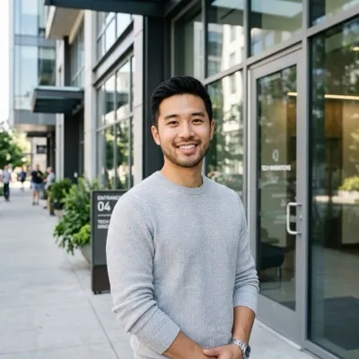

USCIS-Designated Civil Surgeon · New Jersey
Same-day appointments · On-site labs included · Results in 5–7 days · Se habla español
★★★★★ 5.0 on Google · 500+ exams completed
One visit. One flat fee for your exam and all required lab work.
Call us or book online. Same-day available.
Bring passport & vaccination records. Exam takes 30 min.
Sealed I-693 ready in 5–7 business days. Submit to USCIS.
Form I-693, the Report of Immigration Medical Examination and Vaccination Record, is the medical exam U.S. Citizenship and Immigration Services requires from most people applying for a green card. Its purpose is narrow: it confirms you don't have a health condition that would make you inadmissible, that you've had the required vaccinations, and that you've been screened for specific communicable diseases. It is not a general physical, and it does not replace care from your regular doctor. Only a physician USCIS has designated as a civil surgeon can complete and sign it.
A civil surgeon is a doctor USCIS has specifically authorized to perform immigration medical exams and sign Form I-693. Being a licensed physician is not enough — the designation is separate, and an exam signed by a non-designated doctor will be rejected. Dr. Emmanuel M. Weiss is a USCIS-designated civil surgeon with more than 40 years in practice. You can confirm any civil surgeon's designation, including ours, through the official USCIS "Find a Doctor" tool at my.uscis.gov/findadoctor.
Because you are not really buying a physical — you are buying a document that has to be accepted by USCIS the first time. In our experience the I-693s that get sent back fail for administrative reasons far more often than medical ones: a physician who was not USCIS-designated, an outdated edition of the form, a missing or mismatched signature, inconsistent dates, an incomplete tuberculosis classification, a blank vaccination section, or an envelope whose seal was broken before it reached USCIS. Any one of those can trigger a Request for Evidence and set your case back months. The stakes also changed in June 2025: a completed I-693 is now valid only for the application it was filed with, so if that application is denied or withdrawn you pay for an entirely new exam rather than reusing the one you have. $599 buys a USCIS-designated civil surgeon with more than 40 years in practice, working in an office where immigration exams are the core work. We also coordinate directly with immigration attorneys on their clients' filings. It covers the exam, all bloodwork and laboratory testing performed in-house, and your sealed form; vaccinations and x-rays, if you need them, are billed separately and priced before anything is done. Measured against the cost of filing twice, the gap between our price and a cheaper one is small.
In our experience, administrative problems far more often than medical ones. The most common causes are an exam performed or signed by a physician who is not a USCIS-designated civil surgeon; an edition of the form USCIS no longer accepts (USCIS updates Form I-693 periodically and publishes which editions are valid); a missing or mismatched signature from either the applicant or the surgeon; dates that do not agree across the document; an incomplete tuberculosis classification; a blank or partially completed vaccination section; a required test missing for the applicant's age; a positive TB screen submitted without the required chest x-ray; or an envelope whose seal was broken before USCIS opened it. Any one of these can produce a Request for Evidence, and an RFE means going back to the civil surgeon for corrections or a repeat exam while your case waits. None of these are difficult to avoid — they simply require a practice that completes these forms every day and checks them before the envelope is sealed.
Yes. We work with immigration attorneys and are glad to coordinate directly with your legal team. Attorneys tend to care about one thing above all: that the sealed I-693 comes back complete, consistent and on the current form, so it does not generate a Request for Evidence that delays the filing they have spent months preparing. If your attorney has specific timing requirements or wants the form delivered a particular way, tell us when you book and we will work to their instructions.
Bring an unexpired government-issued photo ID — your passport is ideal, a driver's license also works. Bring any vaccination or immunization records you have, in any language; complete records can spare you repeat vaccines. If you have a history of tuberculosis, a prior positive TB test, or treatment for a chronic condition, bring documentation of it. If you have your Form I-693 already, bring it unsigned; you must sign it in front of the civil surgeon. Bring a list of any medications you take. If you'd like an interpreter, you're welcome to bring one.
The visit is straightforward. We review your identification and immunization history, then Dr. Weiss performs the physical examination — a review of your general health covering eyes, ears, heart, lungs, abdomen, skin, and neurological function. We draw blood and collect a urine sample on-site for the required laboratory tests, and complete tuberculosis screening. We review which vaccinations USCIS requires for your age and what your records already show. The in-office portion typically takes about 30 minutes.
USCIS requires tuberculosis screening for every applicant two years of age and older, and if that screen is positive a chest x-ray is required. Under CDC's Technical Instructions for civil surgeons, syphilis testing is required for applicants aged 18 through 44, and gonorrhea testing for applicants aged 18 through 24; outside those ranges, testing is done where there is clinical reason to. The civil surgeon also evaluates for other communicable diseases of public health significance, including Hansen's disease, and assesses for conditions relating to physical or mental disorders and drug use. All required testing is performed in our office — you will not be sent to an outside laboratory.
USCIS requires age-appropriate vaccination against the diseases listed in CDC's Technical Instructions for civil surgeons: diphtheria, tetanus, pertussis, polio, measles, mumps, rubella, rotavirus, Haemophilus influenzae type b (Hib), hepatitis A, hepatitis B, meningococcal disease, varicella, pneumococcal disease, and influenza. Not all of these apply to every applicant — what you actually need depends on your age and your immunisation history, and influenza is required only when the vaccine is available in the United States, so it generally does not apply outside flu season. The COVID-19 vaccination requirement was eliminated on January 22, 2025 and no longer applies, although many websites still list it. We review your records and tell you exactly which vaccines USCIS requires in your case. Vaccinations are not part of the $599 exam fee — they are billed separately, and we confirm what you need and what it costs before anything is administered.
This is common and it is not a problem. If records are unavailable, we can often perform blood testing to check whether you already carry immunity to certain diseases, which can avoid repeating vaccines unnecessarily. Where immunity can't be established and no record exists, the missing vaccines are administered according to USCIS requirements. Bring whatever you do have, in any language — partial records are still useful.
The in-office exam usually takes about 30 minutes. Your completed and sealed Form I-693 is typically ready within 5 to 7 business days, once all laboratory results have returned. If your filing deadline is tight, tell us when you book and we will tell you honestly whether we can meet it.
This rule changed, and a lot of published information is out of date. For any Form I-693 signed by a civil surgeon on or after November 1, 2023, USCIS no longer applies a calendar expiration date — but under policy effective June 11, 2025, the form is valid only for the specific application it was filed with. It cannot be carried over to a future application. If your case is denied or withdrawn, a new medical exam is required. (Forms signed before November 1, 2023 retain the older two-year validity window.) The practical takeaway: complete your exam in step with your filing, not far ahead of it.
Because a current I-693 is tied to the application it's submitted with, the sensible approach is to complete the exam close to when you file, or when USCIS requests it. Many applicants schedule once their application package is otherwise ready. If an immigration attorney is handling your case, follow their timing — and we're glad to coordinate directly with their office.
Often, yes. We hold same-day and same-week appointments for applicants working against filing deadlines. Call or text (855) 755-1312 and we'll tell you what's genuinely available today rather than booking you out two weeks.
The immigration medical exam is a flat-fee service at $599. Most health insurance plans do not cover immigration medical exams because they are required for an immigration benefit rather than for medical treatment. We accept cash, all major credit cards, and standard payment methods.
Yes. We routinely handle families applying together, and scheduling everyone in one visit is usually simpler for everybody. Requirements vary by age — tuberculosis screening begins at age two, while syphilis and gonorrhea testing apply only within specific adult age ranges — so a child's exam is often shorter than an adult's. Tell us the ages when you book and we'll arrange the visit accordingly.
Sí. Contamos con personal bilingüe y atendemos a pacientes en español durante todo el proceso, desde la cita hasta la entrega del formulario I-693 sellado. Puede llamar o enviar un mensaje de texto al (855) 755-1312 y con gusto le atenderemos en español. Se habla español.
Bring documentation and a list of your medications. Most chronic conditions — diabetes, high blood pressure, asthma, treated mental health conditions — have no bearing on admissibility, and disclosing them is far safer than omitting them. The civil surgeon's role is to report accurately, not to judge. Incomplete or inconsistent information is what causes USCIS to issue a Request for Evidence and delay a case.
Our office is at 842 Clifton Ave, Clifton, NJ 07013, in Passaic County, convenient to Routes 3, 46 and the Garden State Parkway. We regularly see applicants from across northern New Jersey and the wider Tri-State Area, including Paterson, Newark, Jersey City, Passaic, Hackensack, Elizabeth, Paramus, Fort Lee, Union City, North Bergen, East Orange, Fair Lawn, Garfield, Wayne and Totowa. See our locations page for directions from your city.
Same-week appointments available.
Call or book online — we'll guide you through it.
842 Clifton Ave, Clifton, NJ 07013
Mon–Thurs 9am–5pm · Fri 9am–3pm · Sat–Sun Closed
There's a reason families trust us.
Join hundreds of patients who completed their immigration medical exam with confidence.
"I had a great experience getting my immigration physical here. The entire process was quick, well-organized, and stress-free."
"Absolute pleasure to work with this team. They were so patient and so great. I could not have been happier."
"The staff has been so friendly and caring. If I call, I get an immediate answer from a real person!"
"If I could give more than 5 stars, I would! Quick service and the charge was extremely reasonable."
"I had a great experience getting my immigration physical here. The entire process was quick, well-organized, and stress-free."
"Absolute pleasure to work with this team. They were so patient and so great. I could not have been happier."
"The staff has been so friendly and caring. If I call, I get an immediate answer from a real person!"
"If I could give more than 5 stars, I would! Quick service and the charge was extremely reasonable."
"This office is warm and respectful. The staff are knowledgeable, efficient, and genuinely compassionate."
"I was nervous about the process but they made everything so easy. Very professional and welcoming environment."
"The doctor was very thorough and kind. Everything was explained clearly. I felt completely at ease."

"Quick, professional, and affordable. Completed everything in one visit. Highly recommend to anyone."
"This office is warm and respectful. The staff are knowledgeable, efficient, and genuinely compassionate."
"I was nervous about the process but they made everything so easy. Very professional and welcoming environment."
"The doctor was very thorough and kind. Everything was explained clearly. I felt completely at ease."
"Quick, professional, and affordable. Completed everything in one visit. Highly recommend to anyone."